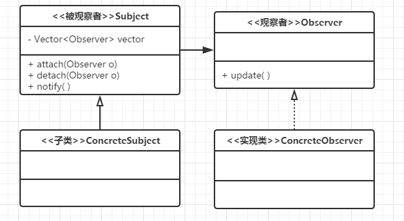

设计模式之观察者模式
2016年9月3日
参考资料：23种设计模式（8）：观察者模式 - 卡奴达摩的专栏
相关概念
定义：对象间一种一对多的依赖关系，使得每当一个对象改变状态，则所有依赖于它的对象都会得到通知并被自动更新。
观察者模式类图：

如上图我们可以有以下四个角色：
- 被观察者: 该类有一个Vector容器用于存放观察者对象（不用List是因为多线程操作中不安全）,另外有三个方法: attach方法是向容器中添加观察者对象, detach方法是从容器中移除观察者对象，notify方法是依次调用观察者对象的对应方法。通常该类表现为抽象类比较多
- 观察者: 该对象一般是一个接口，它只有一个update方法，当被观察者状态发生变化时，这个方法会被触发
- 具体的被观察者 : 用于扩展
- 具体的观察者: 接口的具体实现，被观察者对象状态发生改变时候需要处理相关逻辑
具体代码展示
|
|
运行结果
被观察者事件发生
观察者1收到信息，并进行处理。
观察者2收到信息，并进行处理。
观察者模式优劣
观察者与被观察者之间具有轻度的关联关系，抽象耦合，是常用的一种触发机制，形成相关触发链，依次对各个观察者的方法进行处理。不过，这也让观察者模式存在一定的缺点，观察者数量较多时，耗费的性能是一个令人担忧的问题。同时，链式结构，容易出现循环引用的的错误，造成系统假死。